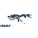

Enter your GitHub username to preview your procedural pixel-art Tulkun, compare with a friend, or copy the setup snippets.
README.mdIncludes a clickable link back to the repository so visitors can discover how your whale was generated.
.github/workflows/tulkun.yml